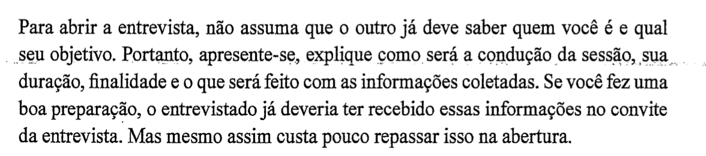
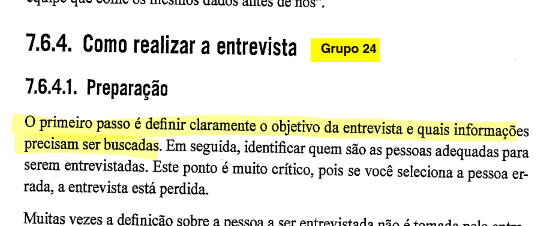
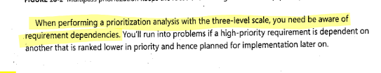
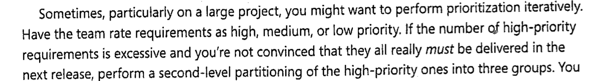
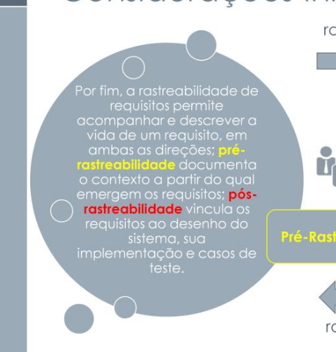
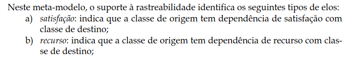

Lista de Verificação - Grupo¶
Introdução¶
Após a conclusão dos outros artefatos da entrega 2, o grupo realizou a verificação a partir das listas disponibilizadas pelo professor no Plano de Ensino.
Checklists¶
Itens são avaliados das seguintes formas:
- Conforme: O projeto satifaz a condição.
- Sugestão de Melhoria: Projeto satisfaz a condição, porém há margem para melhorias. Exige observação.
- Não conforme: O projeto não satifaz a condição.
As tabelas 1 a 8, a seguir, representam as listas de verificação desenvolvidas para cada etapa do projeto.
Tabela 1 — Lista de verificação de elicitação¶
| Item | Descrição | Verificação | Observação | Autor |
|---|---|---|---|---|
| 1 | As personas utilizadas no projeto representam, com grande precisão, os usuários finais do software. [4, p. 167]  |
Conforme | - | Júlia Lopes |
| 2 | Todos os membros da equipe conhecem as personas e as tratam como um membro real da equipe. [4, p. 169]  |
Não conforme | - | Júlia Lopes |
| 3 | A utilização de personas permitiu que a equipe ganhasse uma visão mais clara dos objetivos dos usuários. [4, p. 169]  |
Conforme | - | Júlia Lopes |
| 4 | O elenco desenvolvido pela equipe de personas consiste em 3 a 12 personas distintas. [4, p. 169]  |
Conforme | - | Júlia Lopes |
| 5 | As personas desenvolvidas no projeto possuem características que as tornem distintas e memoráveis. [4, p. 169]  |
Sugestão de Melhoria | Personas possuem características que as tornam diferentes uma da outra, mas não de forma memorável. | Júlia Lopes |
| 6 | Os usuários estão categorizados em grupos definidos pelas suas semelhanças como por exemplo: Idade, experiência, atitudes e tarefas primárias? [4, p. 166] | Não conforme | - | Esther Silva |
| 7 | As personas foram definidos contendo sua identidade, status, objetivos, habilidades,tarefas, relacionamentos, requisitos e expectativas? [4, p. 167, 168]  |
Conforme | - | Esther Silva |
| 8 | No elenco de personas criado possui pelo menos uma persona primária? [4, p. 169]  |
Conforme | - | Esther Silva |
Fonte: Autores
Tabela 2 — Lista de verificação de elicitação¶
| Item | Descrição | Verificação | Observação | Autor |
|---|---|---|---|---|
| 1 | As perguntas da entrevista forma formuladas de forma clara e objetiva? [1, p. 169] | Conforme | - | João Paulo |
| 2 | Os entrevistados foram informados sobre o propósito da pesquisa?[1, p. 174]  | Conforme | - | João Paulo |
| 3 | As respostas dos entrevistados foram registradas de forma precisa? [1, p. 173]  |
Conforme | - | João Paulo |
| 4 | Os entrevistados tiveram a oportunidade de fazer perguntas ou abordar assuntos que esquecemos durante a entrevista? [1, pág 174,175]   |
Sugestão de Melhoria | - | João Paulo |
| 5 | Os entrevistadores já tinha formulado um roteiro préviamente?[1, pág 169]  |
Conforme | - | João Paulo, Laís Cecília |
| 6 | Foi apresentado o planejamento da atividade? [1, p. 141]  |
Conforme | - | Laís Cecília |
| 7 | Os objetivos da entrevista foram claramente definidos antes de sua realização? [1, p. 167]  | Conforme | - | Laís Cecília |
| 8 | Os entrevistados selecionados foram adequados, da forma como definido na preparação? [1, p. 167]  |
Conforme | - | Laís Cecília |
| 9 | Os entrevistados foram apresentados um termo de consentimento, e suas assinaturas coletadas? [1, p. 172] | Conforme | - | Laís Cecília |
| 10 | O termo de consentimento captura adequadamente o consentimento à entrevista, gravação e a disponibilização das mesmas em meio acadêmico? | Conforme | - | Laís Cecília |
| 11 | Foram entrevistadas pessoas diversas, de forma a proporcionar perspectivas diferentes e relevantes? [1, p. 168]  |
Sugestão de Melhoria | Faltou entrevistar um professor | Laís Cecília |
| 12 | A entrevista ocorreu em local adequado, visando minimizar interrupções e distrações? [1, p. 168]  |
Conforme | - | Laís Cecília |
| 13 | As perguntas formuladas possuem complexidade adequada? Isto é, nem tão simples nem tão complicadas. [1, p. 169, 171]   |
Sugestão de Melhoria | As perguntas foram bastante simples; isso se encaixa com os objetivos estabelecidos para a entrevista, porém ainda sim as perguntas poderiam ter sido mais complexas | Laís Cecília |
| 14 | Foi disponibilizada a gravação da entrevista? [1, p. 173]  |
Conforme | - | Laís Cecília |
Fonte: Autores
Tabela 3 — Lista de Verificação de técnicas de priorização.¶
| Item | Descrição | Verificação | Observação | Autor |
|---|---|---|---|---|
| 1 | O processo de priorização teve a participação de diversas categorias de stakeholders? [3, p. 315] |
Conforme | - | Laís Cecília, Júlia Lopes |
| 2 | O significado de cada nível de prioridade é claramente expressado? [3, p. 319]  |
Sugestão de Melhoria | Poderia ter mostrado um gráfico que demonstra como funcionam os níveis | Laís Cecília |
| 3 | A priorização teve atenção com a interdependência entre requisitos? [3, p. 320]  | Não conforme | - | Laís Cecília |
| 4 | O projeto contém requisitos que são ambos importantes e urgentes.[3, p. 319]  |
Não conforme | - | Júlia Lopes |
| 5 | Todos os requisitos do projeto tiveram sua importância e urgência definidas. [3, p. 319]  |
Sugestão de Melhoria | Só contém importância | Júlia Lopes, João Paulo |
| 6 | A priorização dos requisitos foram documentadas de forma que leitores futuros entendam se às prioridades são hereditárias ou especificas do requisito. [3, p. 319]  |
Conforme | - | Júlia Lopes |
| 7 | Existe um entendimento comum entre os stakeholders sobre o que cada nível de prioridade significa? [3, pág 319]  |
Não conforme | Ao fazermos a priorização, não utilizamos nenhum usuário do aplicativo, que atuaria com stackholder, por falta de tempo. | João Paulo |
| 8 | A priorização foi realizada de forma iterativa, se necessário, para garantir que as prioridades estejam corretas? [3, pág 320]  | Não conforme | Ao fazermos a priorização, não utilizamos nenhum usuário do aplicativo, por falta de tempo. | João Paulo |
Fonte: Autores
Tabela 4 — Lista de Verificação de cenários.¶
| Item | Descrição | Verificação | Observação | Autor |
|---|---|---|---|---|
| 1 | Os cenários seguem um modelo conciso? [4, p. 172]  |
Conforme | - | Laís Cecília |
| 2 | Os cenários possuem os elementos definidos por Barbosa et al.(2021)? [4, p. 172] |
Conforme | Poderia ter mostrado um gráfico que demonstra como funcionam os níveis | Laís Cecília |
| 3 | Os cenários possuem exceções? [4, p. 172]  |
Conforme | - | Laís Cecília |
| 4 | Os cenários feitos descrevem o comportamento, experiencia e objetivos de forma clara.[4, p. 172]  |
Conforme | - | Júlia Lopes |
| 5 | Os cenários realizados possuem um título informativo e breve e uma descrição da situação inicial. [4, p. 172] | Conforme | - | Esther Silva, Júlia Lopes |
| 6 | O ator dos cenários inclui características pessoais relevantes aos cenários específicos. [4, p. 172] | Conforme | - | Júlia Lopes |
| 7 | Durante o processo de encenação foi apresentado situações raras/exceções/cenários que o produto pode agir de forma problemática.[4, p. 173]  |
Não conforme | - | Esther Silva, Júlia Lopes, João Paulo |
| 8 | Os cenários incluem um contexto que descreve as pré-condições? [5, p. 49]  |
Conforme | - | João Paulo |
| 9 | Os cenários descrevem interações claras entre os atores e o sistema? [5, p. 48] | Conforme | - | João Paulo |
| 10 | A fim de deixar os cenários com informações mais concretas, foi usada a técnica de questionamento sistemático? [4, p. 172]  |
Conforme | - | Esther Silva |
Fonte: Autores
Tabela 5 — Lista de Verificação de NFR Framework.¶
| Item | Descrição | Verificação | Observação | Autor |
|---|---|---|---|---|
| 1 | O projeto possui ambos requisitos funcionais e não funcionais.[6, p. 30]  |
Conforme | - | Júlia Lopes |
| 2 | Os requisitos funcionais e não funcionais estão organizados em um catálogo de forma hierárquica em relação ao desenvolvimento do projeto.[6, p. 31]  |
Sugestão de Melhoria | Hierárquica não é baseada ao desenvolvimento do projeto | Júlia Lopes |
| 3 | O projeto possue soluções de implementações que satisfazem os softgoals.[6, p. 31]  |
Sugestão de Melhoria | Faz sugestões, mas nem todos possuem soluções | Júlia Lopes |
| 4 | O Softgoal Interdependency Graph (SIG) foi utilizado para visualizar interdependências? [6, p. 45]  |
Conforme | - | João Paulo |
| 5 | Os softgoals estão definidos e bem documentados? [6, p. 31] | Conforme | - | João Paulo |
| 6 | As restrições e exceções relevantes são consideradas na análise dos requisitos? [6, p. 43]  |
Conforme | - | João Paulo |
Fonte: Autores
Tabela 6 — Lista de Verificação de histórias de usuário e backlog.¶
| Item | Descrição | Verificação | Observação | Autor |
|---|---|---|---|---|
| 1 | O desenvolvimento dos épicos foi feito de forma que sua estrutura fui utilizada corretamente. [7, p. 13]  |
Conforme | - | Júlia Lopes |
| 2 | Os épicos desenvolvidos no projeto satisfez as expectativas reais dos usuários. [7, p. 14]  |
Sugestão de Melhoria | Alguns não satisfizeram | Júlia Lopes |
| 3 | Todas as histórias de usuário foram avaliadas pelo cliente/usuário final [10, p. 88] |
Conforme | - | Júlia Lopes |
| 4 | As histórias de usuário foram criadas pelos próprios clientes [10, p. 88]  |
Não conforme | - | Júlia Lopes |
| 5 | As histórias de usuários (User Stories) estão especificadas de forma clara e concisa? [7, p. 11]  |
Conforme | - | João Paulo |
| 6 | As histórias de usuário estão agrupadas em épicos, e estes em temas? [7, p. 13] |
Conforme | - | Laís Cecília, João Paulo |
| 7 | As histórias de usuário seguem o formato destacado por Serrano, Milene e Serrano, Maurício(2017?)? (Eu, como QUEM, quero O QUE, POR QUE) [7, p. 12]  |
Conforme | - | João Paulo, Laís Cecília |
| 8 | O product backlog lista as funcionalidades do produto, atuais ou desejadas? [7, p. 8] | Conforme | - | Laís Cecília, João Paulo |
| 9 | Os requisitos no backlog são representados por histórias de usuário? [7, p. 11]  |
Conforme | - | Laís Cecília |
| 10 | As histórias de usuários têm critérios de aceitação? [7, p. 12] |
Conforme | - | Laís Cecília, João Paulo |
| 11 | As histórias de usuário têm prioridades atribuídas a elas? [10, p. 124] |
Conforme | - | Laís Cecília |
Fonte: Autores
Tabela 7 — Lista de Verificação de rastreabilidade.¶
| Item | Descrição | Verificação | Observação | Autor |
|---|---|---|---|---|
| 1 | Os requisitos estão claramente ligados às suas fontes durante a pré-rastreabilidade? [8, p. 6]  |
Conforme | - | João Paulo |
| 2 | Foi possível realizar a verificação de se um requisito foi implementado no sistema de forma apropriada.[9, p. 122] | Conforme | - | Júlia Lopes |
| 3 | As informações anotadas sobre o sistema foi realizada com um propósito claro [9, p. 123] | Sugestão de Melhoria | Nem todas as informações foram anotadas de forma clara | Júlia Lopes |
| 4 | Existem links de rastreabilidade ligando requisitos às suas fontes? [8, p. 5]  | Conforme | - | Laís Cecília |
| 5 | Existem links de rastreabilidade ligando artefatos aos requisitos que os originaram?[8, p. 5] | Conforme | - | Laís Cecília |
| 6 | Os elos de rastreabilidade estão classificados de acordo com o meta-modelo de Toranzo?[8, p. 22]  |
Conforme | - | Laís Cecília |
Fonte: Autores
Tabela 8 — Lista de Verificação de elos de Toranzo.¶
| Item | Descrição | Verificação | Observação | Autor |
|---|---|---|---|---|
| 1 | Os elos são especificados seguindo o meta-modelo de Toranzo? [8, p.22]  |
Conforme | - | João Paulo, Júlia Lopes, Laís Cecília |
| 2 | Cada tipo de elo está bem explicado no projeto? [8, p. 22] |
Conforme | - | João Paulo |
| 3 | Existe uma análise da interdependência entre os elos? [8, p. 39]  |
Conforme | - | João Paulo |
| 5 | Os elos selecionados para os requisitos satisfazem a classificação desses requisitos. [8, p.21] | Conforme | - | Júlia Lopes |
| 6 | Cada requisito contém pelo menos um elemento rastreável.[8, p.22] | Conforme | - | Júlia Lopes |
| 8 | Os elos são categorizados da forma como identificada pelo modelo? [11, p. 9,10]   |
Conforme | - | Laís Cecília |
Fonte: Autores
Referência¶
| # | Fonte |
|---|---|
| 1 | VASQUEZ, Carlos E.; SIMÕES, Guilherme S. Engenharia de Requisitos: Software Orientado ao Negócio. Brasport, 2016. |
| 3 | WIEGERS, Karl; BEATTY, Joy. Software Requirements. Pearson Education. 3 ed. 2013. |
| 4 | Barbosa, S. D. J.; Silva, B. S. da; Silveira, M. S.; Gasparini, I.; Darin, T.; Barbosa, G. D. J. (2021). Interação Humano-Computador e Experiência do Usuário. Autopublicação |
| 5 | LEITE, J. C. S. dP.. Cenários: Rastreamento de Cenários. PUC-Rio, 2003. Acessível em: https://www-di.inf.puc-rio.br/~julio/bnncap3.pdf |
| 6 | SILVA, Reinaldo Antônio da. NFR4ES: Um Catálogo de Requisitos Não-Funcionais para Sistemas Embarcados. Universidade Federal de Pernambuco, 2019. Disponível em: https://aprender3.unb.br/pluginfile.php/2972515/mod_resource/content/2/DISSERTAÇÃO%20Reinaldo%20Antônio%20da%20Silva.pdf Acesso em: 20 jan. 2025. |
| 7 | SERRANO, Milene. SERRANO, Maurício. Requisitos - Aula 15. UnB Gama (FCTE). Disponível em: https://aprender3.unb.br/pluginfile.php/2972504/mod_resource/content/1/Requisitos%20-%20Aula%2015a.pdf. Acesso em: 21/01/2025. |
| 8 | SERRANO, Milene. SERRANO, Maurício. Requisitos - Aula 26. UnB Gama (FCTE). Disponível em: https://aprender3.unb.br/pluginfile.php/2972560/mod_resource/content/1/Requisitos%20-%20Aula%20026.pdf Acesso em: 22/01/2025. |
| 9 | POHL, Klaus. Requirement Engineering Fundamentals |
| 10 | PRESSMAN, Roger S; MAXIM, Bruce R. Engenharia de Software: Uma Abordagem Profissional. AMGH Editora LTDA, 9a ed. 2021. |
| 11 | SAYÃO, M; LEITE, J.C. Rastreabilidade de Requisitos. PUC-Rio, Rio de Janeiro. 2005. |
Histórico¶
| Versão | Descrição | Autor | Revisor | Revisado | Data |
|---|---|---|---|---|---|
| v1.0 | Página Criada | João Paulo, Júlia Lopes | Esther Sousa | 01/02/2025 | |
| v1.1 | Correções e imagens | Laís Cecília | João Paulo | 08/02/2025 |